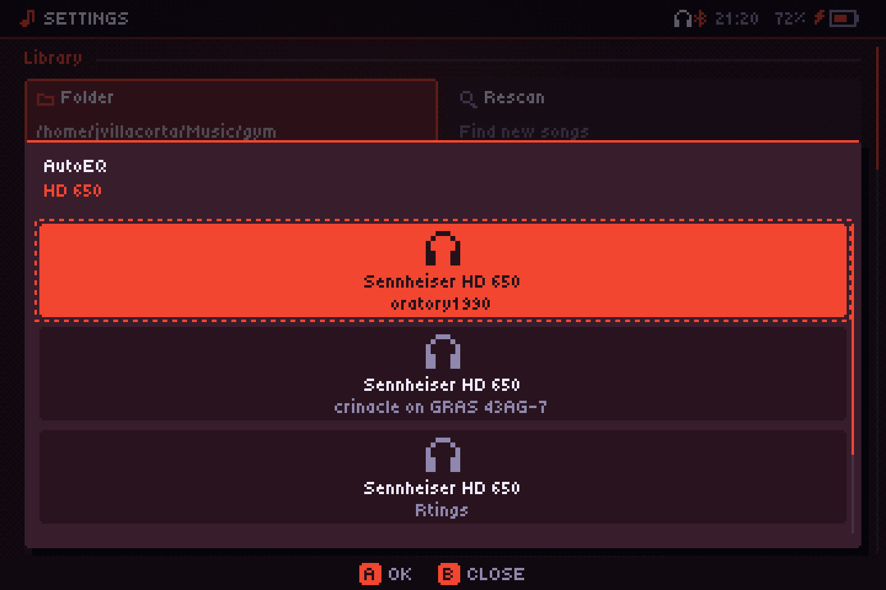
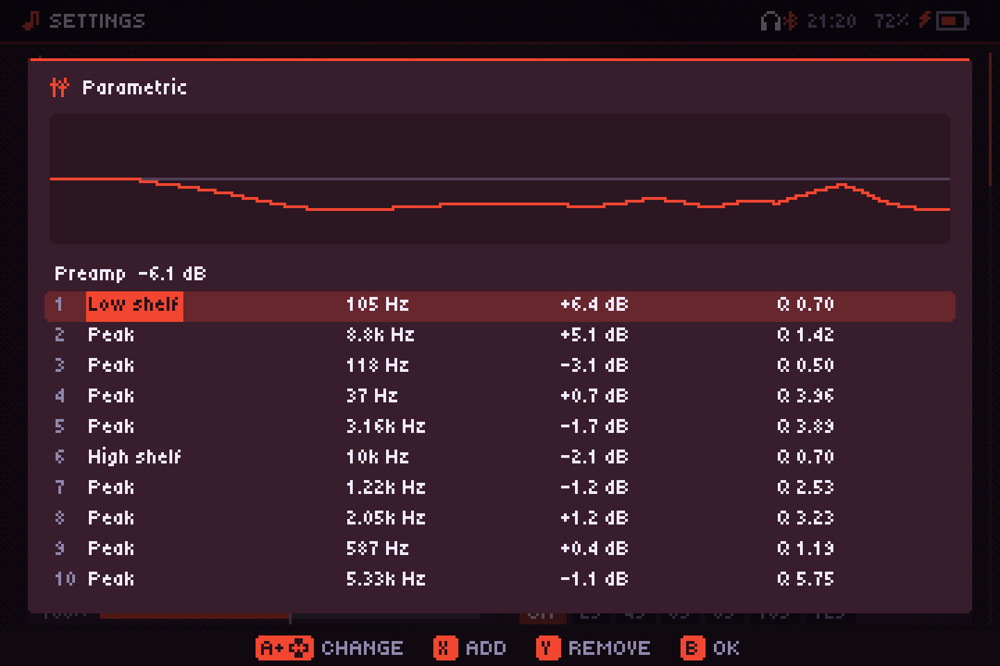

Sonido
ReplayGain, el ecualizador, el fundido y la frecuencia de salida. Los aplica el servicio, así que funcionan con el reproductor cerrado.
Están todos en Ajustes: Fundido en Reproducción, el resto en Sonido.
ReplayGain
Pone todas las canciones (o todos los álbumes) al mismo volumen, usando las etiquetas ReplayGain de tus archivos (también las ganancias R128 de Opus). Ajustes → ReplayGain:
- Automático: por disco al reproducir en orden, por canción en aleatorio.
- Por canción o Por disco.
- No.
Nunca lleva una canción más allá de su pico, así que nada satura. Las canciones sin etiquetas ReplayGain (y las remotas) suenan sin cambios.
Calcular el ReplayGain
Para las canciones sin etiquetas de ReplayGain, Calcular ReplayGain en el menú de una canción, un álbum o un artista las mide (EBU R128, como hace ReplayGain 2.0) y escribe las etiquetas en los archivos: por canción, y para el álbum entero cuando lo haces con un álbum. Va en segundo plano (mira Descargas); en una portátil tarda unos segundos por canción. Las canciones que ya tienen ReplayGain se saltan; Recalcular ReplayGain las vuelve a medir. Funciona con MP3, FLAC, Ogg, Opus y M4A de tu propia biblioteca.
Ecualizador
Ajustes → Ecualizador pregunta cuál usar: Gráfico (10 bandas) o Paramétrico (abajo). El gráfico tiene diez bandas de 31 Hz a 16 kHz, cada una de −12 a +12 dB.

| Botón | Hace |
|---|---|
| ←/→ | Elegir una banda |
| ↑/↓ | Moverla 1 dB |
| X, L1/R1 | Recorrer los ajustes: Plano, Graves, Agudos, Voces, Rock, Metal, Pop, Electrónica, Jazz, Clásica, Loudness |
| Y | Volver a Plano |
| A / B | Cerrar (los cambios se aplican al hacerlos) |
Si mueves una banda tú mismo, el ajuste pasa a A mano. En pantallas táctiles, toca una columna para fijar su altura. Con el ecualizador activo, las diez bandas cuestan un 5 % de la CPU de una portátil a su velocidad más baja; en plano, no cuestan nada.
Ecualizador paramétrico
Hasta diez bandas que das forma tú, con una curva dibujada encima. Cada banda tiene un tipo, Pico, Graves (estante bajo), Agudos (estante alto), Paso bajo o Paso alto, una frecuencia (20 Hz a 20 kHz), una ganancia (±15 dB; los filtros de paso no la usan) y una Q (0,3, ancha, a 10, estrecha). La primera fila es el Preamp, para dejar margen a los realces.
| Botón | Hace |
|---|---|
| ↑/↓ | Elegir una fila (el preamp o una banda) |
| ←/→ | Elegir un campo: tipo, frecuencia, ganancia, Q |
| A + ↑/↓ | Cambiarlo (L1/R1: pasos más grandes) |
| X / Y | Añadir una banda / quitar la elegida |
| B / START | Cerrar (los cambios se aplican mientras los haces) |
El limitador sigue evitando la saturación. Volver al gráfico guarda tus bandas paramétricas para luego.
AutoEQ
En el menú del ecualizador, AutoEQ → Buscar el modelo busca tus audífonos en AutoEq, una base de datos libre con miles de modelos (el índice se baja una vez y se guarda una semana). Cada resultado dice quién lo midió. El que elijas va al ecualizador paramétrico, ahora de hasta diez bandas, que se abre para verlo o retocarlo. Sin conexión, deja archivos ParametricEQ.txt (de AutoEq o de Equalizer APO) en una carpeta eq junto a la app y elígelos en el mismo menú.


Crossfeed
Ajustes → Crossfeed manda un poco de cada canal al otro, filtrado y algo retrasado, como cuando se oyen altavoces. Los discos con instrumentos solo a un lado cansan menos con audífonos. Suave, Medio o Fuerte; viene apagado.
Remuestreo
Las canciones a una frecuencia distinta de la de salida (archivos de 44,1 kHz en una salida de 48 kHz, por ejemplo) se convierten mientras suenan. Ajustes → Remuestreo:
- Batería: simple y muy ligero, lo mejor en una portátil.
- Calidad: un filtro de alta calidad, limpio hasta lo más agudo que se oye, que usa unas cinco veces más CPU (sigue siendo poco en una computadora).
- Auto (por defecto): Calidad en la computadora y Batería en las portátiles.
Se aplica desde la siguiente canción.
Fundido
Ajustes → Fundido: No, o de 2 a 12 segundos de solapamiento entre canciones. No funde entre canciones seguidas del mismo álbum en orden, así que los álbumes siguen sin cortes. Tampoco funde canciones muy cortas ni canciones de servidores que aún no se han descargado.
Frecuencia de salida
Ajustes → Frecuencia de salida: 44.1, 48, 96 o 192 kHz. Al cambiarla se reinicia el servicio de audio, que sigue donde iba. Con el archivo a la misma frecuencia y nada aplicado (volumen al 100 %, sin ReplayGain ni ecualizador), las muestras salen intactas, aunque PipeWire o PulseAudio aún podrían remuestrear. No está disponible en iPhone.
Volumen y refuerzo
El volumen va de 0 a 200 %. Hasta el 100 % es el volumen del sistema; por encima, Audiofilus refuerza la señal con un limitador para que los masters fuertes no distorsionen.
DSD
Los archivos DSF y DFF suenan, convertidos a PCM. DSD64 es lo bastante ligero para una portátil; DSD256 puede que no le dé tiempo.
El DSD no puede salir "nativo" (DoP) a un DAC: eso necesita que las muestras le lleguen bit a bit, y la salida de Audiofilus pasa por el mezclador del sistema como PCM, como la de cualquier app. La conversión se hace con cuidado, pero es una conversión.